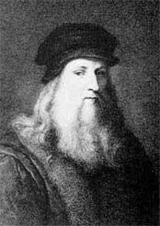

|
|
LEONARDO DA VINCI 1452-1519
Kepalanya
diloloskan bidan dari rahim sang ibu tahun 1452 dekat kota
Florence, Italia. Dan kepalanya dimasukkan ke liang kubur
tahun 1519. Dia itulah Leonardo dan Vinci. Abad demi abad
tak membuat guram reputasinya selaku mungkin genius yang
paling brilian yang pernah hidup di planit bumi ini. Kalau
saja ada daftar "orang-orang termasyhur" sudah pasti
Leonardo da Vinci tercantum nomor wahid diantara lima puluh
tokoh lainnya. Tetapi, bakatnya dan reputasinya tampaknya
dilebih-lebihkan jika diukur dari pengaruhnya terhadap
sejarah.
Dalam buku catatannya, Leonardo meninggalkan sketsa
banyak penemuan-penemuan modern, misalnya masalah pesawat
terbang dan kapal selam. Karena catatan itu sekedar
membuktikan kebrilianan dan orisinalitas, tak adalah
pengaruhnya terhadap perkembangan ilmu pengetahuan. Pertama,
Leonardo tidaklah membuat model dari penemuan-penemuan itu.
Kedua, meskipun ide-idenya amat cemerlang, tak menunjukkan
bahwa ide-ide itu dapat dilaksanakan. Taruhlah ide-ide
tentang pesawat terbang dan kapal selam itu: Jauh lebih
sulit membuat model untuk pembuatan kongkritnya. Yang
namanya penemu besar bukanlah sekedar mereka yang punya
ide-ide brilian tetapi gagal mewujudkannya, tetapi yang
disebut penemu besar itu adalah orang-orang seperti Thomas
Edison, James Watt atau Wright bersaudara yang punya bakat
mekanik dan ketekunan menggarap perincian-perincian dan
mengatasi kesulitan pembuatannya hingga betul-betul
berfungsi. Leonardo tidak lakukan hal macam ini.
Lebih jauh dari itu, kendati sketsa-sketsanya memuat juga
perincian-perincian yang diperlukan agar penemuannya bisa
berwujud, toh masih ada juga bedanya, karena
penemuan-penemuan itu cuma terkubur di buku catatan dan baru
diterbitkan berabad-abad sesudah Leonardo sendiri mati. Pada
saat catatan-catatannya diterbitkan (yang kebetulan teksnya
ditulis di atas kaca), ide-ide yang termaktub dalam penemuan
itu sudah ditemukan pula oleh orang-orang lain secara
berdiri sendiri. Kita berkesimpulan, sebagai ilmuwan dan
penemu, Leonardo tak punya pengaruh penting.
Pencantuman Leonardo dalam daftar ini karena itu
disebabkan terutama pada karya-karya artistiknya. Leonardo
memang seorang seniman kelas tinggi walau tidak setenar
Rembrandt, Raphael, Van Gogh atau El Greco. Diukur dari
akibat-akibat yang ditimbulkannya dalam hal perkembangan
seni berikutnya, pengaruhnya jauh lebih kecil ketimbang
Picasso maupun Michelangelo.
Leonardo punya kebiasaan yang patut disayangkan. Dia
memulai sesuatu proyek dengan ambisi yang berkobar-kobar,
tetapi tak pernah merampungkan sebagaimana mestinya.
Katakanlah dia itu "panas-panas tai ayam." Akibatnya, hasil
lukisannya yang tuntas jumlahnya jauh lebih sedikit
ketimbang karya pelukis-pelukis yang disebut di atas. Karena
terlampau sering dia pindah dari satu lukisan yang belum
rampung ke lukisan lainnya lagi, Leonardo berhasil
membagi-bagi bagian penting dari bakatnya yang luar biasa.
Walau tampaknya kikuk, menganggap Leonardo seorang yang
kurang begitu becus padahal dialah pencipta lukisan Mona
Lisa, tetapi ini sudah jadi kesimpulan yang lazim dilakukan
oleh mereka para ahli yang menyelidiki karier Leonardo.
Mungkin saja Leonardo da Vinci orang yang paling berbakat
yang pernah hidup, tetapi kelestarian karyanya relatif
kecil. Dan meskipun dia seorang arsitek masyhur, tampaknya
dia belum pernah mendirikan bangunan yang betul-betul
terbangun. Dan tak satu pun karya patung pahatnya yang masih
bisa ditemukan sekarang. Peningggalan hasil bakatnya yang
indah terdiri dari sejumlah sketsa, beberapa lukisan yang
menakjubkan (tak sampai dua puluh lima jumlah yang masih
tinggal), dan seperangkat catatan-catatan yang bisa membikin
orang abad ke- 20 terbengong-bengong atas kegeniusannya,
tetapi sedikit atau bahkan tak ada samasekali pengaruhnya
terhadap ilmu pengetahuan atau pun bidang penemuan. Tetapi,
betapa pun selangit bakatnya, tidaklah dia tergolong seratus
tokoh yang berpengaruh yang pernah hidup di atas bumi kita
yang bundar ini.
|